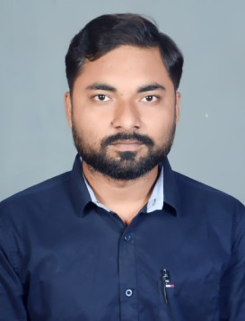

ABHINANDAN KUMAR
Vill+Po.-Mehsaul, P.S.-Runnisaidpur, Dist.-Sitamarhi, Bihar, Pin-843328
P:+917488026507
E: abhinandanksah95@gmail.com
DOB: 11-03-1995
EXPERIENCE
SITE EXECUTIVE ENGINEER (From April 2022 to Presently working in Oil & Gas pipe line construction )
- Working in oil and gas pipe line construction. While working in this field
i have worked colsely with different clients like GAIL, IOCL, GIGL,
Tractebel, JSIW, Corrtech KPTL etc.
- I have experience to work closely with different team member and
able to work under pressure and i know how to complete project on time.
- I have worked on two cross country pipeline project
(Mehsana Bathinda Pipeline Project & HMEL Connectivity pipeline project).
-
Working on pipeline information management system.
-
Working on Electronic documentation management system.
-
Free issue material reconciliation.
-
Final documentation for hand over.
-
Meaking measurement sheet and abstract of payment for billing.
-
Making of Material recipt inspection report.
-
Daily Process Report(DPR) updating.
-
Able to make pipebook and all activities reports.
-
Hydrotest calculation.
SUPERVISOR & MIS (FEB-2020 TO DEC-2020)
- Process Observation and improvement.
- Working closely with different team member.
- Daily reporting to senior management team.
- Analysis of production and electricity consumption.
- Making daily production report and material status reports.
- Man power management
- Quality control
KHANNA ENTERPRISES, CHANDIGARH
INTERNSHIP (JULY-2018 TO SEP-2018)
- Learnt about the different manufacturing process.
- By doing in-process quality checking and maintaining the standard of the product learnt about
different QC-tools (eg. Vernier Caliper, Micrometer, Height Gauge, Rockwell and Brinnel Hardness testing etc.)
- Worked on AutoCad
- Testing of incoming material
EDUCATION
Punjab Technical University
Btech in Mechanical Engineering (2015 - 2019)
Grade 7.67 CGPA
Rameshwar Singh College, Muzaffarpur, Bihar
Bihar School Examination Board(BSEB)
12th (2014)
Marks 65.8%
Ram Daun High School Morsand,Runnisaidpur, Bihar
Bihar School Examination Board(BSEB)
10th (2011)
Marks 69.8%
SKILLS
AutoCad, Ms-Word, Ms-Excel, Ms-Power Point, Adobe Acroboat, HTML, CSS, Negotiation, Presentation, Communication, Problem Solving
LANGUAGE
- Hindi (Reading, Wrightin and Speaking)
- English (Reading, Wrightin and Speaking)
- Punjabi (Understand)
HOBBIES
Running, Watching Movies, Meditation, Cooking, Teaching
Thanks For Visiting!!!!!....(Please contact me for further discussion)